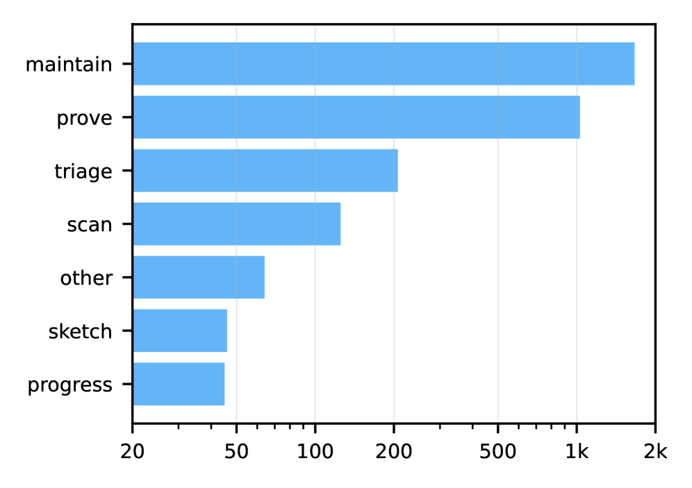

About 30K parallel Claude agents autonomously formalized a 500-page algebraic combinatorics textbook into Lean, producing 130K lines and 5900 declarations.
Abstract
We present a case study where an automatic AI system formalizes a textbook with more than 500 pages of graduate-level algebraic combinatorics to Lean. The resulting formalization represents a new milestone in textbook formalization scale and proficiency, moving from early results in undergraduate topology and restructuring of existing library content to a full standalone formalization of a graduate textbook. The formalization comprises 130K lines of code and 5900 Lean declarations and was conducted within one week by a total of 30K Claude 4.5 Opus agents collaborating in parallel on a shared code base via version control, simultaneously setting a record in multi-agent software engineering with usable results. The inference cost matches or undercuts what we estimate as the salaries required for a team of human experts, and we expect there is still the potential for large efficiencies to be made without the need for better models. We make our code, the resulting Lean code base and a side-by-side blueprint website available open-source.
Problem
Formalizing mathematics textbooks in proof assistants remains a labor-intensive manual process. Scaling formalization to full graduate-level textbooks has not been demonstrated by automated systems.
Approach
An automatic AI system formalizes a 500+ page graduate-level algebraic combinatorics textbook to Lean. The system uses approximately 30,000 Claude 4.5 Opus agents collaborating in parallel on a shared code base via version control, with agents working simultaneously on different parts of the formalization. Proof engineering is cast as an agentic task where each agent contributes commits to the shared repository.

Figure 2 : Number of agents by type
Results
The resulting formalization comprises 130K lines of code and 5,900 Lean declarations, with all 340 target theorems proved. The work was completed within one week. The inference cost matches or undercuts estimated salaries for a human expert team. The code base, resulting Lean formalization, and a side-by-side blueprint website are released open-source.